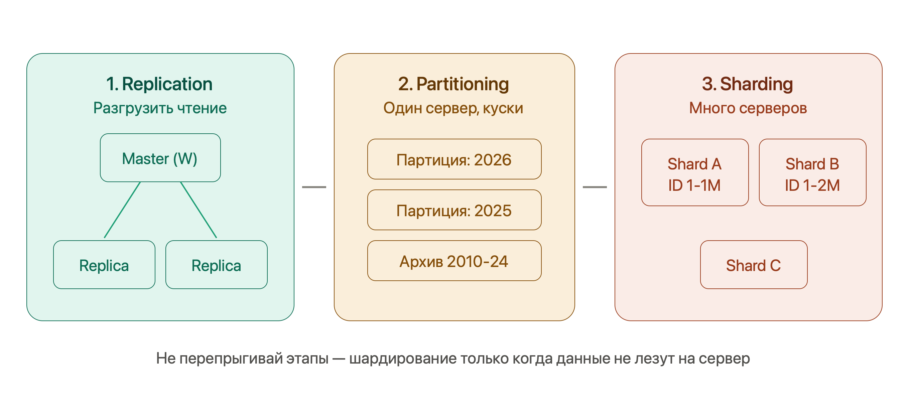

Системный дизайн (System Design)¶
Фундамент¶
TCP vs UDP¶
Два способа передать данные на транспортном уровне.
| TCP | UDP | |
|---|---|---|
| Соединение | Three-way handshake (SYN → SYN-ACK → ACK) | Нет — «выстрелил и забыл» |
| Гарантии | Доставка, порядок, переотправка потерянного | Никаких |
| Цена | Задержка + overhead | Минимальная |
| Кто живёт сверху | HTTP, gRPC, драйверы БД | Видеозвонки, стриминг, игры, DNS, QUIC |
Аналогия: TCP — заказное письмо с уведомлением о вручении, UDP — открытка в почтовый ящик.
HTTP и HTTPS¶
HTTP — «запрос → ответ» поверх TCP: метод (GET/POST/PUT/DELETE), заголовки, тело; в ответ — статус-код, заголовки, тело.
HTTP — stateless
Сервер сам по себе не помнит предыдущие запросы. Состояние живёт в куках/токенах у клиента или выносится в Redis/БД. Именно это свойство — фундамент горизонтального масштабирования (Надёжность и эксплуатация).
HTTPS = HTTP внутри TLS-туннеля: шифрование трафика + аутентификация сервера (сертификат). Цена — дополнительные round-trip'ы на TLS handshake при установке соединения.
HTTP/1.1 → HTTP/2 → HTTP/3¶
Вся эволюция — борьба с Head-of-Line Blocking (блокировкой головы очереди):
- HTTP/1.1 — по одному соединению запросы идут строго по очереди. Костыль браузеров: 6 параллельных соединений на домен.
- HTTP/2 — мультиплексирование: много потоков в одном TCP-соединении, сжатие заголовков (HPACK). Но потеря одного TCP-пакета тормозит все потоки — блокировка переехала на уровень TCP.
- HTTP/3 — QUIC поверх UDP: надёжность и порядок реализованы отдельно для каждого потока, потеря пакета одного потока не трогает остальные. Плюс быстрее устанавливает соединение (шифрование встроено).
Фраза для собеса
«HTTP/2 убрал HOL-блокировку на уровне приложения, но она осталась на уровне TCP; HTTP/3 через QUIC поверх UDP убирает её и там».
DNS¶
Телефонная книга интернета: имя → IP. Цепочка резолвинга (кэш на каждом шаге, срок — TTL записи):
Для дизайна важно: DNS агрессивно кэшируется, а geo-DNS (разные IP разным регионам) работает как грубая балансировка нагрузки.
Что происходит при вводе URL¶
Классический разминочный вопрос — связывает всё вышеперечисленное:
- DNS-резолвинг — имя → IP (с кэшами по пути)
- TCP handshake — SYN → SYN-ACK → ACK
- TLS handshake — сертификат, обмен ключами (для HTTPS)
- HTTP-запрос и ответ —
GET /→200 OK+ HTML - Рендеринг — браузер парсит HTML, догружает статику (обычно уже с CDN)
Каждый шаг добавляет задержку — отсюда ценность DNS-кэша, keep-alive соединений и CDN.
REST vs gRPC vs GraphQL¶
| REST | gRPC | GraphQL | |
|---|---|---|---|
| Транспорт/формат | HTTP + JSON | HTTP/2 + Protobuf (бинарный) | HTTP + JSON, один endpoint |
| Плюсы | Прост, универсален, HTTP-кэш | Быстрый, компактный, контракт .proto + codegen, стриминг |
Клиент выбирает поля → нет over/under-fetching |
| Минусы | Over-fetching / under-fetching | Нечитаем глазами, слабее в браузере, сложнее дебаг | Сложно кэшировать, N+1, тяжёлые запросы кладут сервер |
| Когда брать | Публичные API — дефолт | Внутреннее общение микросервисов | Много разных клиентов с разными нуждами |
Синхронно vs асинхронно¶
- Sync — вызвал и блокируешься до ответа (обычный REST-вызов). Просто, но связность высокая: получатель тормозит или упал → тормозишь/падаешь и ты.
- Async — кинул сообщение в очередь (Kafka/RabbitMQ) и работаешь дальше. Развязка сервисов, буферизация пиков, устойчивость к падениям получателя. Цена: eventual consistency, сложнее отследить результат.
Пример: регистрация пользователя — синхронно (нужен мгновенный ответ), отправка welcome-письма — в очередь.
Метрики¶
- Latency — время одного запроса. Смотрим перцентили (p50/p95/p99), а не среднее: p99 = 200 мс значит «1% запросов медленнее 200 мс» — и именно хвост портит UX.
- Throughput — запросов в единицу времени (QPS/RPS). Latency — про один запрос, throughput — про поток.
- Availability — доля времени, когда система работает:
| Девятки | Downtime в год |
|---|---|
| 99% | ~3.65 дня |
| 99.9% | ~8.76 часа |
| 99.99% | ~52 минуты |
| 99.999% | ~5 минут |
Каждая следующая девятка — на порядок дороже. Полезно спросить у интервьюера, какая нужна.
- Consistency — все ли клиенты видят одни и те же данные (детально — CAP, Тир 2).
- Durability — данные не теряются после подтверждённой записи (репликация на несколько узлов). Не путать с availability: данные могут быть целы, но временно недоступны.
Back-of-the-envelope estimation¶
Оценка «на салфетке» — навык, который обосновывает архитектуру числами, а не «на глаз».
Числа, которые надо помнить:
- Секунд в сутках ≈ 86 400 (~10⁵), в году ≈ 3×10⁷
- ASCII-символ ≈ 1 байт, UUID ≈ 16 байт, JSON-событие ≈ 1 KB, картинка ≈ 100 KB – 1 MB
- Задержки: RAM — наносекунды, SSD — микросекунды, сеть внутри ДЦ — ~0.5 мс, через океан — ~150 мс
Алгоритм на примере (Twitter-подобный сервис, 300M MAU):
- QPS: DAU ≈ 150M, по 2 запроса в день → 300M / 10⁵ ≈ 3000 QPS в среднем
- Пик: трафик неравномерен, ×2–3 → ~9000 QPS — мощности проектируем на пик
- Read/Write: соцсеть ≈ 100:1 → ~30 QPS записи и ~3000 чтения → кэш обязателен
- Хранилище: 30 твитов/с × 300 байт × 3×10⁷ с ≈ ~270 GB/год текста; с медиа и репликацией ×3 — терабайты → шардирование
Смысл шага
Не точное число, а порядок величины + архитектурный вывод из него: «100:1 → кэш», «терабайты → шардинг», «99.99% → репликация». Округляй агрессивно, считай вслух — оценивают ход рассуждения.
Строительные блоки¶
Load Balancing — балансировка нагрузки¶
Балансировщик — регулировщик на перекрёстке. Стоит перед серверами, распределяет трафик так, чтобы ни один сервер не упал от перегрузки, пока другие простаивают, и убирает из ротации мёртвые узлы по health-check. Основа горизонтального масштабирования и высокой доступности.
L4 vs L7 — самый частый вопрос¶
| L4 (Transport — TCP/UDP) | L7 (Application — HTTP/HTTPS) | |
|---|---|---|
| Что видит | Только IP и порт | URL, заголовки, cookie, тело |
| Скорость | Очень быстрый | Медленнее (распаковка пакета) |
| Ресурсы | Минимум CPU/памяти | Больше CPU/памяти |
| Возможности | Просто перекидывает пакеты | Роутинг по URL, SSL termination, кэш |
| Пример решения | "Отправь на сервер 2" | "/images → файловый сервер, /api → бэкенд" |
L4 — "глупый, но быстрый". L7 — "умный, но дороже": терминирует SSL (расшифровывает HTTPS на уровне балансировщика) и роутит по содержимому.
Алгоритмы балансировки¶
Round Robin (Карусель) — запросы раздаются по очереди: серверу 1, 2, 3, снова 1. Подходит когда серверы одинаковы и запросы примерно равны по нагрузке. Версия Weighted Round Robin даёт мощному серверу больший "вес".
Least Connections — трафик идёт на сервер с наименьшим числом активных подключений. Нужен для "тяжёлых" долгих запросов (скачивание файлов, WebSocket, сложные отчёты), где Round Robin может добить уже занятый сервер.
IP hash / Consistent hashing — один клиент всегда попадает на один сервер (без sticky-куки). Про consistent hashing подробно — ниже в шардировании.
Sticky Sessions (Липкие сессии)¶
Пользователь залогинился, сессия в памяти Сервера А. Следующий запрос балансировщик кинул на Сервер Б — пользователь "разлогинился". Sticky Sessions привязывают клиента к одному серверу через cookie.
Антипаттерн
- Нарушается равномерность — на одном сервере скапливается много юзеров. 2. Если сервер падает, все "прилипшие" к нему теряют сессии. Правильное решение — хранить сессии не в памяти, а в Redis (тогда любой сервер обслужит любого юзера).
Стандартный первый ход в дизайне
«Ставим L7-балансировщик с health-check'ами перед пулом stateless-серверов, сессии — в Redis».
Caching — кэширование¶
Две цели: снизить latency и разгрузить БД. При read:write 100:1 (типичная соцсеть) кэш решает почти всё.
Уровни (hit на любом → дальше не идём): браузер (Cache-Control, ETag) → CDN → кэш приложения (Redis/Memcached) → БД (источник истины, до неё доходят только промахи).
Паттерны кэширования¶
Cache-Aside (Lazy Loading) — приложение сначала идёт в кэш. Hit → отдаём. Miss → идём в БД, кладём в кэш, отдаём. В Spring — @Cacheable. Кэшируется только то, что реально запрашивают. Если кэш упадёт — система выживёт (пойдёт в БД напрямую).
Write-Through (Сквозная запись) — пишем всегда в кэш, кэш синхронно пишет в БД. Ответ — только когда сохранилось в обоих местах. В кэше всегда свежие данные, но запись медленнее.
Write-Behind (Отложенная запись) — пишем в кэш и сразу получаем ОК. Кэш асинхронно сбрасывает в БД пачками. Молниеносная запись (идеально для счётчиков просмотров/лайков), но если кэш сгорит до сброса — данные потеряны.
Стратегии вытеснения (Eviction)¶
- LRU (Least Recently Used) — выкидывает то, к чему дольше всего не обращались. Золотой стандарт. Вчерашняя статья уйдёт, освободив место сегодняшней горячей.
- LFU (Least Frequently Used) — выкидывает то, к чему обращались меньше всего раз. Хорошо для статических справочников, плохо для трендов.
- TTL — по истечении времени жизни; обычно комбинируется с LRU.
Инвалидация¶
Как не отдавать устаревшее после изменения в БД: короткий TTL либо явное удаление/обновление ключа при записи. Недаром шутка: «в программировании две сложные вещи — инвалидация кэша и придумывание имён».
Cache Stampede (Thundering Herd)¶
Главная страница закэширована с TTL = 5 минут.
12:00:00 — TTL истёк, кэш пуст.
12:00:01 — заходят 1000 юзеров одновременно.
Все 1000 потоков видят Cache Miss → одновременно бьют тяжёлым SQL в БД.
База ложится от перегрузки.
Как лечить
Mutex/Lock — когда кэш протухает, только один первый поток получает право сходить в БД (захватывает лок). Остальные 999 либо ждут, либо получают чуть устаревшую копию (Stale Data), пока первый не обновит. Знакомо из многопоточности Java. Альтернатива — probabilistic early expiration (вероятностное раннее обновление до истечения TTL).
Redis vs Memcached vs Hazelcast¶
Memcached — простой key-value кэш в памяти. Redis — богаче: структуры данных (списки, sorted sets), персистентность, pub/sub — дефолтный выбор сегодня. Дальше — нюансы кластеризации:
| Redis | Hazelcast | |
|---|---|---|
| Что это | In-Memory Data Structure Store (C) | In-Memory Data Grid (Java) |
| Шардирование | 16 384 хэш-слота по Master-узлам | 271 партиция, у каждого узла основные + backup |
| Маршрутизация | Smart Clients (Lettuce/Jedis знают карту) | P2P, узлы равны |
| Killer-фича | Скорость, простота | Data Locality — EntryProcessor выполняется на узле с данными |
| Консистентность | AP по умолчанию | AP + CP Subsystem (Raft) для надёжных локов |
Redis Cluster: нет центрального узла, все общаются по Gossip-протоколу. Клиент сам знает, что user:123 лежит на Узле 2 (через хэш-слот). Если карта устарела — узел ответит MOVED, клиент обновит карту. У Master есть Replica, при падении — голосование и promotion реплики.
Hazelcast Data Locality: чтобы обновить зарплату миллиону сотрудников, в Redis пришлось бы тащить миллион записей по сети. В Hazelcast отправляешь маленький EntryProcessor (кусок Java-кода) внутрь кластера — он выполнится прямо на узлах с данными. Сеть не нагружается.
Базы данных: SQL vs NoSQL¶
SQL (Postgres, MySQL) — строгая схема, связи через внешние ключи, JOIN'ы, транзакции ACID. Бери, когда: структурированные данные со сложными связями, важна согласованность (деньги, заказы), объём умеренный.
NoSQL — зонтик из четырёх типов, каждый заточен под свой паттерн доступа:
- Key-value (Redis, DynamoDB) — «ключ → значение», молниеносно. Кэши, сессии, простые lookup'ы.
- Document (MongoDB) — JSON-документы, гибкая схема. Каталоги, профили.
- Column-family (Cassandra) — гигантские объёмы, write-heavy, линейно масштабируется. Логи, метрики, лента.
- Graph (Neo4j) — узлы и связи. Соцграф, рекомендации.
Антипаттерн
NoSQL «потому что модно». Без чётко известного паттерна доступа, под который база заточена, получишь боль без выгоды. SQL по умолчанию — NoSQL под конкретную причину.
Индексы — B-дерево: чтение по колонке из полного перебора превращается в быстрый поиск. Расплата — место на диске и замедление записи (каждый INSERT/UPDATE обновляет и индекс). Индексируем то, по чему ищем/сортируем, а не всё подряд.
ACID: Atomicity — всё или ничего (списание + зачисление вместе); Consistency — из валидного состояния в валидное; Isolation — параллельные транзакции не мешают (уровни: read committed / repeatable read / serializable); Durability — закоммичено → не потеряется.
Масштабирование БД: три этапа¶

Три этапа. Нельзя сразу шардировать — особенно на простом MVP.
1. Replication (Репликация)¶
┌──────────┐
Запись ──→ │ Master │ ──── async replication ────┐
└──────────┘ │
┌─────────┴─────────┐
▼ ▼
┌──────────┐ ┌──────────┐
Чтение │ Replica │ │ Replica │ Чтение
└──────────┘ └──────────┘
Master принимает запись (INSERT/UPDATE/DELETE), реплики — только чтение (SELECT). Разгружает Master, даёт High Availability (если Master умер — реплика становится новым Master).
Replication Lag
Копирование с Master на реплику занимает время (миллисекунды, под нагрузкой — секунды). Асинхронно. Проблема: записал данные → тут же прочитал → а их ещё нет на реплике. Решение для критичных чтений: читать из Master (Read-Your-Writes consistency).
Дополнения:
- Master-Master — писать можно в несколько узлов (запас по записи, гео-распределение). Плата — конфликты записи (два узла изменили одно по-разному), которые надо разрешать (например, last-write-wins по timestamp).
- Sync vs async репликация: синхронная — master ждёт подтверждения реплик перед ответом (durability, но медленно); асинхронная — отвечает сразу (быстро, но lag и риск потерять хвост незареплицированных записей при падении master).
2. Partitioning (Партиционирование)¶
Главное правило
Партиционирование происходит на ОДНОМ сервере (внутри одной БД).
Горизонтальное (по строкам) — бьём гигантскую таблицу на партиции по правилу (например, по месяцам). Для приложения таблица одна (news), но физически январь хранится отдельно от февраля. Ищем за март — БД не трогает январь.
Вертикальное (по столбцам) — выносим тяжёлые колонки (avatar_image_bytes, huge_bio_text) в отдельную таблицу user_details (1-к-1), оставляя в основной только частые id, name, email. Кэш БД скажет спасибо.
3. Sharding (Шардирование)¶
Когда данные не лезут на один сервер — ставим несколько. Данные размазываются по узлам на основе Shard Key. Юзеры ID 1–1M на Сервере А, 1M–2M на Сервере Б.
Почему шардирование — это ад
- JOIN-ы умирают — нельзя сделать JOIN между таблицами на разных серверах. Джоины переезжают в Java-код.
- Распределённые транзакции — перевод денег между серверами не покрыть обычным
BEGIN...COMMIT. Привет, 2PC или Saga. - Ребалансировка — Сервер А заполнился → добавляем Сервер В → нужно без остановки продакшена перенести часть данных.
Выбор Shard Key — ключевое решение, от него зависит равномерность:
- Range-based (по диапазону: дата, id, алфавит) — просто, удобны диапазонные запросы, но легко получить перекос: весь свежий трафик бьёт в один шард.
- Hash-based (хэш от ключа) — равномерно, но диапазонные запросы («все заказы за март») размазаны по всем шардам — дорого.
Hotspot (горячая точка)
Один шард получает непропорционально много трафика. Классика — «звёздный» пользователь: шард знаменитости с миллионами подписчиков раскаляется. Лечится подмешиванием суффикса в ключ или выделением таких сущностей отдельно.
Consistent Hashing¶
Проблема наивного hash(key) % N: добавили/убрали сервер → изменился N → почти все ключи переехали на новые места. Для кэша это тотальный miss, для шардов — массовая перебалансировка.
Решение — кольцо: диапазон значений хэша замыкаем в круг, серверы — точки на нём (по хэшу имени), каждый ключ обслуживает первый сервер по часовой стрелке. Добавление/удаление узла двигает только соседний участок ключей — малую долю, а не всё.
Для равномерности каждый физический сервер представлен множеством виртуальных узлов (много точек на кольце).
Где живёт: распределённые кэши, Cassandra, DynamoDB. 16 384 хэш-слота Redis Cluster и 271 партиция Hazelcast — инженерные вариации той же идеи.
Message Queues — очереди сообщений¶
Посредник для асинхронного общения: producer кладёт сообщение, consumer забирает в своём темпе. Даёт развязку (сервисы не знают друг о друге), буферизацию (пик оседает в очереди, а не роняет получателя), устойчивость (получатель упал — сообщения ждут).
Две модели:
- Point-to-point (queue) — сообщение получает один consumer из группы → распределение задач (обработать платёж, отправить письмо).
- Pub/Sub (topic) — получают все подписчики → события («заказ создан» → склад, аналитика, почта).
| RabbitMQ | Kafka | |
|---|---|---|
| Суть | Классический брокер очередей | Распределённый лог событий |
| Сообщения | Удаляются после подтверждения | Хранятся, можно перечитать заново |
| Сильная сторона | Гибкая маршрутизация, модель «сделай задачу» | Гигантский throughput, стриминг событий, event sourcing |
Dead Letter Queue (DLQ)¶
Проблема Poison Pill
Консьюмер читает очередь. Приходит сломанный JSON. Парсер падает. Сообщение не подтверждено. Брокер думает "консьюмер не справился, дам ещё раз" — и так бесконечно. Очередь встаёт из-за одного сообщения.
Решение: Retry Policy (3 попытки с растущей задержкой 1с/3с/10с). Если после 3 раз всё ещё ошибка — брокер перекидывает сообщение в DLQ. Основная очередь работает дальше, дефектные сообщения в DLQ разбирают разработчики или по ним стреляют алерты.
CDN (Content Delivery Network)¶
Сеть географически распределённых edge-серверов, кэширующих статику (картинки, видео, JS/CSS) рядом с пользователем. Физика: запрос через океан ~150 мс, до ближайшего edge — единицы мс.
- Pull — CDN сам тянет контент с origin при первом промахе и кэширует (дефолт, просто). Push — заливаешь контент заранее сам (контроль).
- Бонусы: разгрузка origin-сервера, TLS-терминация на краю, защита от DDoS.
В дизайне любой системы с картинками/видео CDN появляется по умолчанию.
Теория распределённых систем¶
CAP-теорема¶
- C (Consistency) — каждый клиент видит самые последние данные или ошибку. Никто не видит устаревшую версию.
- A (Availability) — любой живой узел всегда отвечает (без ошибки).
- P (Partition tolerance) — система работает даже если сеть между узлами порвалась.
Суть компромисса
В реальном мире сеть ломается всегда. P — это не опция, а реальность. Поэтому выбор всегда между C и A в момент аварии.
При обрыве связи между дата-центрами:
CP-система (выбираем Consistency) — запрещаем запись/чтение на изолированном узле. Пользователь видит "Ошибка 500" (жертвуем A), но никто не прочитает устаревшую финансовую сводку. Примеры: MongoDB, HBase, Redis Cluster в строгом режиме, ZooKeeper/etcd.
AP-система (выбираем Availability) — узел продолжает отвечать из того, что у него есть. Сайт работает, но данные могут быть устаревшими (жертвуем C). Это Eventual Consistency — когда сеть починят, узлы синхронизируются. Примеры: Cassandra, DynamoDB, Hazelcast.
Фраза для собеса
«Поскольку P неизбежно, вопрос — чем жертвуем при разделении: для корзины/закладок берём AP, для платежей — CP».
PACELC — жизнь без аварий¶
CAP описывает только момент аварии. Но 99.9% времени сеть работает. PACELC:
IF Partition (сеть порвалась): выбирай между A и C
ELSE (сеть работает): выбирай между L (Latency) и C (Consistency)
Сеть в порядке, юзер публикует срочный пресс-релиз:
- Выбрал Latency — узел быстро записал к себе, мгновенно ответил ОК. Молниеносно. Но пока данные асинхронно летят на другие узлы, кто-то прочитает старую версию.
- Выбрал Consistency — узел записал, дождался записи на всех узлах, потом ответил ОК. Идеальная согласованность, но задержка огромная.
Модели согласованности¶
Спектр гарантий — от строгих (медленно, координация) к слабым (быстро):
- Strong (линеаризуемость) — любое чтение видит последнюю запись, как будто копия одна. Деньги, остатки товара на складе.
- Causal — причинно-связанные события все видят в правильном порядке: ответ на комментарий не появится раньше самого комментария. Независимые события могут расходиться.
- Read-your-writes — свои изменения видишь всегда, даже если чужие ещё догоняют. Лечит «написал коммент → обновил страницу → его нет» при replication lag.
- Monotonic reads — данные не «прыгают назад во времени»: раз увидел значение — более старое уже не покажут.
- Eventual — реплики расходятся ненадолго, но сойдутся. Лайки, лента, счётчики просмотров.
Искусство дизайна — выбрать минимально достаточную модель под каждую операцию, а не тащить strong везде.
Консенсус: Raft / Paxos¶
Задача: узлы должны договориться об одном значении или порядке операций, несмотря на сбои узлов и сети. Paxos — классика, знаменит труднопонятностью; Raft сделан понятным. Интуиция Raft:
- Узлы выбирают лидера (leader election).
- Лидер принимает все записи, упорядочивает и реплицирует.
- Запись принята, когда её подтвердило большинство (кворум, N/2+1).
Следствия:
- Кластеры делают нечётного размера (3, 5) — большинство определяется однозначно.
- Кластер переживает падение меньшинства узлов, но встаёт без большинства.
- Два конфликтующих решения не могут победить одновременно — любые два большинства пересекаются.
Где живёт: etcd, ZooKeeper, Consul, выбор нового Master при failover, CP Subsystem в Hazelcast. Самому реализовывать не надо — надо понимать, что внутри этих систем и зачем.
Гарантии доставки и идемпотентность¶
- At-most-once — доставим максимум раз, без ретраев. Можно терять. Некритичные метрики.
- At-least-once — ретраим до подтверждения → возможны дубликаты. Дефолт брокеров (Kafka, RabbitMQ).
- Exactly-once — ровно один раз. End-to-end дорог и труднодостижим.
Главная формула
Exactly-once на практике = at-least-once доставка + идемпотентная обработка. Смиряемся с дубликатами на доставке, но делаем обработку безопасной к повтору.
Идемпотентность — повторное выполнение = однократному по эффекту: GET и set(x=5) идемпотентны, increment(x) — нет. Приём для API — idempotency key: клиент шлёт уникальный id запроса, сервер запоминает обработанные и на повтор возвращает прежний результат, не выполняя операцию заново (так работают платёжные API — Stripe: при ретрае деньги не спишутся дважды).
Idempotent Consumer¶
Брокеры дают At-least-once — одно сообщение может прилететь дважды из-за рестартов или сетевых задержек. Идемпотентность — повторная обработка не создаёт дублей побочных эффектов (юзер не получит три одинаковых письма).
@KafkaListener(topics = "news-published")
@Transactional
public void onNewsPublished(NewsPublishedEvent event) {
// Способ 1: проверка по Idempotency Key
if (processedEventRepository.existsById(event.getEventId())) {
return; // уже обрабатывали — игнорируем
}
sendEmails(event);
processedEventRepository.save(new ProcessedEvent(event.getEventId()));
// Способ 2 (надёжнее): UNIQUE constraint в БД
// При дубликате → DataIntegrityViolationException → ловим, коммитим offset
}
Распределённые транзакции¶
Бизнес-операция размазана по сервисам/БД («оформить заказ» = склад + платёж + доставка), а единого BEGIN...COMMIT поверх них нет.
Two-Phase Commit (2PC)¶
Координатор в две фазы: спрашивает всех «готовы закоммитить?» (prepare) → если все ответили «да» — командует «commit». Даёт атомарность, но:
- Блокирующий: пока идёт голосование, участники держат локи. Умер координатор между фазами → участники зависли с заблокированными ресурсами.
- Плохо масштабируется, режет availability.
Поэтому в микросервисах 2PC почти не используют — используют Saga.
Saga¶
Бизнес-процесс размазан по микросервисам, единого ROLLBACK нет. Saga решает через компенсирующие транзакции (шаги отмены): цепочка локальных транзакций, у каждой есть компенсация. Шаг 3 упал → компенсируем шаги 2 и 1 («вернуть товар на склад», «отменить платёж»).
Choreography (Хореография) — сервисы общаются событиями, нет центра. А сохранил → кинул ивент. Б поймал → обновил → кинул ивент. Если В падает — кидает FailedEvent, А и Б ловят и компенсируют.
- ➕ Слабая связность, нет единой точки отказа.
- ➖ При 4+ сервисах логику невозможно отследить — спагетти.
Orchestration (Оркестрация) — центральный оркестратор (стейт-машина) шлёт команды: "А, сохрани" → ждёт → "Б, обнови" → ждёт. Если В вернул ошибку — оркестратор шлёт А и Б команды отката.
- ➕ Весь флоу в одном месте, легче мониторить.
- ➖ Оркестратор — единая точка отказа, может обрасти сложной логикой.
Saga не даёт изоляции
В середине саги система в промежуточном состоянии (платёж прошёл, доставки ещё нет) — это eventual consistency, дизайн должен это учитывать.
Transactional Outbox¶
Проблема Dual Write
Редактор публикует новость. Нужно: 1) сохранить в PostgreSQL, 2) отправить событие в Kafka. Если сначала БД, а Kafka моргнёт — сервисы не узнают. Если сначала Kafka, а БД упадёт — фантомное событие без данных.
Решение: в той же транзакции БД пишем во вторую табличку outbox_events:
BEGIN;
INSERT INTO news_metadata (id, title) VALUES (1, 'Новый листинг');
INSERT INTO outbox_events (id, aggregate_type, payload)
VALUES (100, 'News', '{...json...}');
COMMIT;
-- Транзакция гарантирует: либо всё, либо ничего
Отдельный фоновый процесс (часто Debezium, читающий WAL-логи БД) сканирует outbox_events и надёжно перекладывает сообщения в Kafka. Ушло — удаляется из outbox.
Микросервисы vs монолит¶
Монолит — одно разворачиваемое приложение: проще разрабатывать, деплоить и тестировать на старте, единая БД и обычные ACID-транзакции. Минусы приходят с ростом: нельзя масштабировать отдельные части, команды мешают друг другу, один стек навсегда.
Микросервисы — независимые сервисы: отдельный деплой и масштабирование, автономия команд, свобода стека. Цена: сетевая сложность, распределённые транзакции (см. выше), сложная наблюдаемость, ops-overhead.
Distributed monolith
Худший исход: разбили на сервисы, но они так связаны, что деплоятся только вместе — минусы обоих миров. Зрелый ответ на собесе: «начинаем с монолита, выделяем сервисы под конкретную причину (масштаб, автономия команд), а не рефлекторно».
Поддерживающие детали:
- API Gateway — единая точка входа для клиентов: маршрутизация к сервисам, аутентификация, rate limiting, агрегация ответов. Клиент общается с gateway, а не с десятком сервисов.
- BFF (Backend For Frontend) — эволюция Gateway: отдельный лёгкий сервис под конкретного клиента (один для веба, другой для мобилки). Вместо 10 запросов с фронта к складу/биллингу/профилю — 1 запрос к BFF, который сам всё соберёт по микросервисам и вернёт готовый JSON под конкретный экран.
- Service Discovery — реестр живых инстансов (Eureka, Consul): сервисы находят друг друга, когда инстансы постоянно появляются/исчезают при автоскейлинге.
Внутреннее устройство отдельного сервиса — DDD, Hexagonal, CQRS/Event Sourcing — вынесено в конспект «Архитектура приложения».
Rate Limiting¶
Ограничение частоты запросов: защита от абьюза и брутфорса, честное распределение ресурсов, контроль затрат. Классическая задача дизайна сама по себе.
| Алгоритм | Суть | Особенность |
|---|---|---|
| Fixed window | Счётчик на фиксированное окно (100/мин) | Проблема границы: 100 в конце минуты + 100 в начале следующей = 200 за пару секунд |
| Sliding window log | Храним timestamp каждого запроса | Точно, но ест память |
| Sliding window counter | Взвешенный гибрид текущего и прошлого окна | Хороший прод-баланс точности и памяти |
| Token bucket | Токены капают со скоростью R, запрос тратит токен | Разрешает всплески до размера ведра |
| Leaky bucket | Запросы «вытекают» с постоянной скоростью | Выравнивает поток, всплесков не допускает |
Различие, которое спрашивают
Token bucket допускает burst (накопил токены — потратил разом), leaky bucket выравнивает поток в ровный темп.
Распределённый лимитер: при многих инстансах счётчик должен быть общим, иначе каждый лимитит по-своему → атомарные инкременты в Redis.
Надёжность и эксплуатация¶
Аксиома распределённых систем: всё рано или поздно падает — сеть моргает, сервисы тормозят, диски умирают. Дизайн — не «как избежать сбоев», а «как выжить при них». В Java-мире эти паттерны собраны в Resilience4j.
Resilience-паттерны¶
Timeout — базовое и часто забываемое: никогда не жди ответа бесконечно. Зависшие вызовы копят потоки/соединения, и медленный сосед вешает твой сервис.
Retry + exponential backoff + jitter — повтор при временном сбое, но с умом:
- Пауза растёт экспоненциально (1с → 2с → 4с) — даём сервису восстановиться.
- Jitter (рандом в паузе) — иначе все клиенты ретраят синхронно и добивают лежащий сервис (retry storm / thundering herd).
- Ретраить — только идемпотентные операции (иначе дважды спишешь деньги).
@Retry(name = "bankApi")
// application.yml:
// resilience4j.retry.bankApi.max-attempts: 4
// resilience4j.retry.bankApi.wait-duration: 1s
// resilience4j.retry.bankApi.exponential-backoff-multiplier: 2
Circuit Breaker (предохранитель) — самый важный паттерн, три состояния:
CLOSED ──(error rate > порог)──→ OPEN ──(пауза)──→ HALF-OPEN
HALF-OPEN ──(пробные прошли)──→ CLOSED
HALF-OPEN ──(снова ошибки)──→ OPEN
- Closed — работаем, считаем ошибки.
- Open — мгновенно отклоняем запросы, не дёргая мёртвый сервис: fail fast, не тратим ресурсы, даём упавшему передышку.
- Half-open — пропускаем несколько пробных.
Смысл одной фразой: предохранитель не даёт локальному сбою превратиться в каскадный отказ всей системы.
// Resilience4j — стандарт де-факто в Java
@CircuitBreaker(name = "bankApi", fallbackMethod = "fallbackBonus")
public BonusResult calculateBonus(Long userId) {
return bankApiClient.getBonus(userId); // может зависнуть
}
// Fallback — когда предохранитель открыт
public BonusResult fallbackBonus(Long userId, Throwable t) {
log.warn("Банк недоступен, возвращаем дефолт", t);
return BonusResult.empty();
}
Bulkhead (переборка) — как отсеки корабля: отдельные пулы потоков/соединений на каждую зависимость. Вызовы к сервису А зависли и выели свой пул → вызовы к Б живут на своём. Без переборок один медленный dependency вешает всё приложение.
Graceful degradation / fallback — урезанный, но рабочий ответ вместо 500: упал сервис рекомендаций → страница товара без блока «похожие». Часто реализуется как fallback у circuit breaker (в open отдаём кэш/дефолт). Разница между «сайт лагает» и «сайт лежит».
Observability (наблюдаемость)¶
Нельзя чинить то, что не видишь. Три столпа:
- Metrics — числовые агрегаты: QPS, latency (p50/p95/p99, не среднее!), error rate, CPU/память, глубина очередей. Prometheus + Grafana; в Java — Micrometer через Spring Boot Actuator.
- Logs — события. В распределёнке — структурированные (JSON) и централизованные (ELK: Elasticsearch+Logstash+Kibana, или Loki), иначе логи 30 сервисов бесполезны.
- Traces — путь запроса через сервисы: trace id протаскивается через все вызовы, каждый участок — span с таймингом. OpenTelemetry, Jaeger/Zipkin. Отвечает на «запрос прошёл 8 сервисов — где затык?».
Золотые сигналы (Google SRE)
Latency, Traffic, Errors, Saturation — мониторь четыре, покроешь большинство проблем. Алерты — по симптомам для пользователя (медленно, ошибки), а не по каждой мелочи — иначе alert fatigue и их игнорируют.
Health checks: liveness (жив ли процесс — если нет, оркестратор рестартует) vs readiness (готов ли принимать трафик — прогрет кэш, есть коннект к БД). Spring Actuator /health.
Sidecar (коляска мотоцикла) — паттерн деплоя в Kubernetes: бизнес-логика — «мотоцикл», логирование/метрики/проксирование — «коляска», отдельный контейнер в том же поде (общие сеть и диск, изоляция по процессам). Java-приложение просто пишет в stdout, sidecar собирает и отправляет дальше — тяжёлая инфраструктура логирования не тащится в код.
┌─────────── Pod ───────────┐
│ [Java App] [Sidecar] │
│ пишет в Fluentbit │
│ stdout → собирает │
│ → ElasticSearch
└───────────────────────────┘
Масштабирование¶
- Вертикальное (scale up) — мощнее сервер (CPU/RAM). Просто, но потолок железа, дорого наверху, единая точка отказа.
- Горизонтальное (scale out) — больше серверов за балансировщиком. Дефолтный путь. Требование — stateless.
Stateless — король
Сервер не хранит состояние клиента в своей памяти: сессии — в Redis/БД или в JWT у клиента. Тогда любой сервер обслужит любого юзера, инстансы взаимозаменяемы → свободный scale out и autoscaling (добавлять/убивать инстансы по CPU/QPS). Фраза для собеса: «делаем серверы stateless, состояние в Redis — горизонтальное масштабирование становится тривиальным».
Load shedding — при перегрузке осознанно отбросить часть запросов (или низкоприоритетные), чтобы корректно обслужить остальные. Лучше отказать 5%, чем деградировать на 100%.
Специализированные хранилища (polyglot persistence)¶
Под разные задачи — разные хранилища:
- Object storage (S3, GCS) — большие бинарники: картинки, видео, бэкапы. Паттерн: файлы не в БД — в базе только ключ/URL, сам файл в S3, раздача через CDN. Presigned URL — клиент грузит файл напрямую в S3 по временной подписанной ссылке, минуя твой бэкенд.
- Time-series (Prometheus, InfluxDB, TimescaleDB) — метрики, IoT, котировки: поток записи + агрегаты по временным диапазонам.
- Search (Elasticsearch/OpenSearch) — полнотекстовый поиск, который SQL делает плохо (
LIKE '%слово%'не масштабируется, нет релевантности/опечаток). Внутри — инвертированный индекс (слово → документы). Паттерн: истина в SQL, копия для поиска в ES, синхронизация через события. - Geo — «найди ближайшее» (такси, доставка): geohash (близкие точки → общий префикс строки) или quadtree/R-tree. Из коробки: Redis GEO, PostGIS.
Безопасность в дизайне¶
- AuthN vs AuthZ: аутентификация — кто ты (логин/пароль, токен); авторизация — что тебе можно (права). Сначала первое, потом второе — не путать.
- Sessions vs JWT:
| Сессии (в Redis) | JWT | |
|---|---|---|
| Состояние | На сервере (session id в куке) | В самом токене (stateless) |
| Отзыв | Мгновенный (удалил из стора) | Трудный до истечения → короткий TTL access + refresh token |
| Масштабирование | Нужен общий стор | Идеально для scale out — сервер проверяет только подпись |
JWT подписан, но НЕ зашифрован
Содержимое токена читается любым — секретов внутри не хранить.
- OAuth 2.0 / OpenID Connect — делегированный доступ («Войти через Google»): приложение получает токен, не видя пароль. OAuth 2.0 — авторизация (доступ к ресурсам), OIDC — аутентификация поверх (кто пользователь). В Java — Spring Security OAuth2.
- Шифрование: in transit (TLS — обязательно) и at rest (диски БД, бэкапы). Пароли — только хэш с солью (bcrypt/argon2). Секреты/ключи — в Vault / Secrets Manager, не в коде.
Собеседование¶
Методология: 6 шагов (~40 минут)¶
Провалы чаще случаются не от незнания, а от структуры: кандидат прыгает в детали БД, не выяснив, что строим. Держи каркас по порядку — он же чек-лист вслух.
1. Требования (~5 мин). Никакого кода и квадратиков!
- Функциональные — что система делает: только списываем/начисляем? Нужна история? Бронирование?
- Нефункциональные — в каких условиях: RPS? Критична ли latency? Что важнее — Availability или Consistency?
- Явно сузь скоуп: «фокусируюсь на X и Y, Z отмечу как расширение» — сигнал зрелости.
Для ERP/финансов ответ всегда — Consistency
Лучше система выдаст ошибку, чем продаст один товар двум людям.
2. Оценка масштаба (~5 мин). Back-of-the-envelope из Тира 0: QPS средний и пиковый, read:write, объём на годы. Из чисел — архитектурные выводы: «100:1 → кэш», «терабайты → шардинг». Не пропускай — этот шаг обосновывает всё дальнейшее.
3. API (~5 мин). Пара ключевых эндпоинтов — контракт системы:
POST /api/v1/inventory/reserve — забронировать товар
GET /api/v1/inventory/{item_id} — получить остатки
Покажи понимание версионирования, идемпотентности (что будет, если клиент дважды вызовет POST из-за лага?), правильных HTTP-статусов.
4. Модель данных + High-Level Design (~10 мин). Рассуждай вслух: «Выбираю реляционную БД, потому что нужны строгие гарантии целостности и джоины для отчётов». Обсуди индексы; для критичных данных — append-only история / Event Sourcing (аудит). Затем крупные блоки и поток данных:
Клиент → API Gateway → Warehouse Service → PostgreSQL (транзакция)
│
▼
Event Bus (Kafka)
│
┌───────────────┼───────────────┐
▼ ▼ ▼
Billing Service Analytics Notification
5. Deep Dive (~10 мин). Интервьюер начнёт ломать систему: "А что если сервер упадёт после записи в БД, но до отправки в Kafka?" Здесь блистаешь: Transactional Outbox, идемпотентность консьюмеров, выбор shard key, стратегия кэша.
6. Bottlenecks и trade-offs (~5 мин). Сам подними слабые места: единые точки отказа, hotspot'ы, поведение на пике. Главный сигнал сеньорности — показать, что у каждого выбора есть цена, и ты её видишь.
Три золотых правила
- Думай вслух. Молчать 5 минут и выдать идеал хуже, чем 5 минут рассуждать вслух о компромиссах и выдать решение с небольшим изъяном.
- Нет серебряной пули. Каждое решение имеет плюсы и минусы — озвучивай их.
- Озвучивай компромиссы: "Redis для остатков даст скорость, но риск stale data — поэтому для чекаута идём в master-базу".
Разбор: URL Shortener (типа bit.ly)¶
Эталонный проход по методологии.
1. Требования. Функциональные: укоротить URL; редиректить по короткому. Расширения (проговорить и отложить): кастомные алиасы, TTL ссылки, аналитика кликов. Нефункциональные: крайне read-heavy; редирект — очень быстрый; высокая availability (редиректы лежат = все ссылки мертвы); коды уникальны.
2. Масштаб. 100M новых ссылок/мес → запись ≈ 40 QPS. Read:write 100:1 → чтение ≈ 4000 QPS (пик ~10 000) → агрессивный кэш. Хранилище: запись ~500 байт × 6 млрд за 5 лет ≈ ~3 ТБ → закладываем шардирование. Длина кода: base62 (a–z, A–Z, 0–9), 62⁷ ≈ 3.5 трлн → 7 символов хватит с запасом.
3. API.
301 vs 302 — классический trade-off
301 (permanent) кэшируется браузером → быстрее, но клики мимо тебя — аналитики нет. 302 (temporary) — каждый клик идёт к тебе → есть аналитика, чуть медленнее. Нужна аналитика → 302.
4. High-level. Клиент → LB → stateless-сервис → Redis (cache-aside) → БД. Запись: сгенерировать код, сохранить пару. Чтение: кэш → miss → БД → положить в кэш → редирект.
5. Deep dive — генерация кода (сюда копают в первую очередь):
- А: хэш URL (MD5) + 7 символов. Просто, но коллизии → проверка в БД и перегенерация — лишние чтения при записи.
- Б: глобальный счётчик + base62. Уникально без коллизий, но общий счётчик — узкое место и точка отказа при многих серверах.
- В (лучший): Key Generation Service с диапазонами. Отдельный сервис (или Redis/ZooKeeper) выдаёт серверам диапазоны id пачками (A: 1–1000, B: 1001–2000). Сервер раздаёт коды локально из своего диапазона → нет общего счётчика на каждый запрос, коллизии невозможны в принципе.
5б. Deep dive — хранилище и кэш. Паттерн доступа — точечный lookup shortCode → longUrl, без связей и транзакций → идеальный кейс для key-value NoSQL (DynamoDB/Cassandra), тривиально шардится. Шардирование — hash по shortCode (диапазонные запросы не нужны — минус hash-шардинга не мешает). Кэш — Redis, LRU: популярные ссылки живут в кэше, hit rate высокий.
6. Bottlenecks.
- Редирект — критический путь: кэш обязателен; очень «горячие» ссылки — на CDN/edge.
- KGS — точка отказа → реплицируем + серверы держат запас предвыданного диапазона.
- Hotspot (вирусная ссылка) → сглаживают кэш и CDN.
- Аналитика кликов — не синхронно в пути редиректа: событие в Kafka, обработка асинхронно.
Классические задачи и их «фокус»¶
Каждую задачу спрашивают ради конкретного приёма — готовя задачу, качай именно его:
| Задача | Ради чего спрашивают |
|---|---|
| URL shortener | Генерация уникальных ключей (KGS + диапазоны), кэш, 301 vs 302 |
| Pastebin | То же + object storage (S3) для больших текстов, TTL, приватность |
| Rate limiter | Алгоритмы (token bucket и др.), распределённый счётчик в Redis |
| News feed / Twitter | Fan-out on write vs on read, гибрид для «звёзд», eventual consistency |
| Чат / мессенджер | WebSocket (persistent connections), доставка и порядок сообщений, presence |
| Uber / такси | Геоиндексы (geohash/quadtree), real-time обновления локаций, матчинг |
| YouTube / Netflix | Загрузка → транскодинг через очередь → CDN, адаптивный стриминг (HLS/DASH) |
| Google Drive / Dropbox | Чанкинг файлов, дедупликация, синхронизация, разрешение конфликтов |
| Автокомплит | Префиксное дерево (trie) + топ-K, прекомпьют популярных подсказок |
| Нотификации | Очереди с приоритетами, идемпотентность, ретраи, DLQ |
| Distributed cache | Consistent hashing во всей красе, репликация, LRU |
Fan-out за 30 секунд
On write (push): при публикации поста раскладываем его в ленты всех подписчиков → чтение мгновенно, но пост звезды с 50M фолловеров = 50M записей. On read (pull): собираем ленту в момент запроса → запись дёшево, чтение дорого. Гибрид — стандартный ответ: push для обычных пользователей, pull для звёзд.
Разбор кейсов¶
Кейс 1: Round Robin убивает один сервер¶
Проблема: 3 сервера генерируют PDF-отчёты, L4 + Round Robin, трафик равномерный, но один сервер регулярно падает от OOM, два других на 20%.
Решение: Round Robin раздаёт запросы вслепую, не зная их веса. Генерация PDF — тяжёлая долгая операция. Если на один сервер случайно попало несколько "тяжёлых" PDF-запросов подряд, они копятся, а Round Robin продолжает слать новые. Заменить на Least Connections (увидит что сервер занят) или перейти на L7 для роутинга по типу запроса. Тяжёлые PDF лучше вообще вынести в асинхронную очередь.
Кейс 2: База падает в 10:10, Redis-узел сгорел в 10:05¶
Проблема 1 — что убило базу в 10:10: Cache Stampede (Thundering Herd). TTL = 10 минут, кэш создан в 10:00, истёк в 10:10. Тысячи брокеров одновременно получили Cache Miss и одновременно ударили в PostgreSQL. Лечить — mutex (один поток обновляет кэш) или вероятностное раннее обновление (probabilistic early expiration).
Проблема 2 — почему смерть Redis в 10:05 не положила кэш: В Redis Cluster у Master есть Replica. Узлы заметили падение по Gossip, проголосовали, повысили реплику до Master. Но репликация асинхронная — если Master принял запись и сгорел до репликации, эти данные могли потеряться (для кэша не критично — пересоберётся из БД).
Кейс 3: DevOps хочет шардировать 100M строк¶
Проблема: Таблица kase_news — 100M строк за 15 лет. Бизнес: "новости 2026 мгновенно, на архивы плевать". DevOps: "шардируем по year, 15 серверов".
Решение: Шардирование — пушка по воробьям. Получим всю боль (распределённые джоины, ребалансировка) ради задачи, решаемой на одном сервере:
- Горизонтальное партиционирование по
year— БД физически разделит данные, запрос за 2026 не тронет архивы. Свежие данные = маленькая горячая партиция в RAM. - Вертикальное партиционирование — вынести тяжёлое тело статьи в отдельную таблицу, оставив в основной
id,title,dateдля быстрых списков.
Кейс 4: Экскаватор перерубил кабель Алматы–Астана¶
Проблема: Сервис "Избранное", БД в двух дата-центрах, Network Partition.
Решение: Для закладок выбираем AP (Availability). Цена ошибки низкая — ну увидит юзер свой список закладок на секунду неактуальным. В момент аварии: оба дата-центра продолжают принимать запросы, юзер добавляет закладки, они сохраняются локально. После починки сети — Eventual Consistency, узлы синхронизируются (конфликты решаются, например, по timestamp). PACELC при рабочей сети: тоже выбираем L (Latency) — мгновенный отклик важнее идеальной согласованности для такой некритичной фичи.
Кейс 5: Потерянные и дублированные письма¶
Проблема: News сохраняет в БД и шлёт NewsPublished в Kafka, EmailSender рассылает письма. Баги: 1) события теряются, 2) приходит по 3 письма, 3) сломанный JSON блокирует очередь.
Решение — три паттерна:
- Transactional Outbox (потеря событий) — сохранять новость и событие в одну транзакцию БД, воркер надёжно перекладывает в Kafka.
- Idempotent Consumer (дубли писем) — проверять
event_idперед отправкой, UNIQUE constraint в БД. - Dead Letter Queue (poison pill) — после 3 retry перекидывать битое сообщение в DLQ, очередь работает дальше.
Итоговая шпаргалка¶
| Тема | Запомнить |
|---|---|
| TCP vs UDP | TCP — handshake, гарантии, порядок. UDP — быстро, без гарантий (стриминг, DNS, QUIC) |
| HTTP/2 vs HTTP/3 | /2 — мультиплексирование, но HOL остался в TCP. /3 — QUIC поверх UDP, HOL убран |
| REST / gRPC / GraphQL | Наружу / между сервисами (скорость) / гибкость для разных клиентов |
| Latency | Смотри p99, не среднее — хвост портит UX |
| Availability | 99.9% ≈ 8.8 ч/год; 99.99% ≈ 52 мин/год. Каждая девятка — на порядок дороже |
| Estimation | Сутки ~10⁵ с, год ~3×10⁷ с; пик = ×2–3; из чисел — архитектурные выводы |
| L4 vs L7 | L4 — IP/порт, быстро. L7 — URL/заголовки, умный роутинг + SSL termination |
| RR vs Least Connections | RR — равные запросы. LC — тяжёлые долгие запросы |
| Sticky Sessions | Антипаттерн. Лучше — сессии в Redis |
| Cache-Aside | Читай кэш → miss → БД → положи в кэш. Spring @Cacheable |
| Write-Through vs Write-Behind | Through — синхронно, свежо. Behind — async, быстро, риск потери |
| LRU vs LFU | LRU — давно не трогали. LFU — мало раз трогали |
| Cache Stampede | Толпа на истёкший TTL. Лечить mutex-локом / ранним обновлением |
| Consistent Hashing | Кольцо: новый узел двигает только соседний участок. Виртуальные узлы для равномерности |
| Replication | Master пишет, реплики читают. Replication Lag → read-your-writes с master |
| Partitioning | Один сервер. Горизонтальное (строки) / вертикальное (столбцы) |
| Sharding | Много серверов. Боль: джоины, распределённые транзакции, ребаланс. Hotspot от «звёзд» |
| SQL vs NoSQL | SQL — связи, ACID, дефолт. NoSQL — масштаб + известный паттерн доступа |
| CAP | Сеть рвётся всегда → выбор C vs A в аварию. CP — деньги, AP — корзина/закладки |
| PACELC | Без аварии — выбор между Latency и Consistency |
| Consistency-модели | Strong → causal → read-your-writes → eventual. Бери минимально достаточную |
| Consensus | Кворум N/2+1, кластеры нечётные (3/5), Raft — etcd/ZooKeeper/Consul |
| Доставка | Брокеры = at-least-once → дубли. Exactly-once = at-least-once + идемпотентность |
| Idempotent Consumer | Проверка event_id / UNIQUE constraint. Idempotency key в платёжных API |
| Transactional Outbox | Бизнес-данные + событие в одну транзакцию. Решает Dual Write |
| DLQ | Poison pill → retry → Dead Letter Queue, очередь живёт |
| Saga | Компенсации вместо rollback. Choreography vs Orchestration. Изоляции НЕТ |
| 2PC | Атомарно, но блокирующий и хрупкий — в микросервисах избегают |
| Rate Limiting | Token bucket — всплески ок. Leaky — ровный поток. Счётчик — в Redis |
| Retry | Только идемпотентные + exponential backoff + jitter (иначе retry storm) |
| Circuit Breaker | Closed → Open → Half-Open. Fail fast против каскадного отказа |
| Bulkhead | Изолируй пулы потоков по зависимостям |
| Sidecar | Логи/метрики/прокси — в соседнем контейнере пода, не в коде приложения |
| BFF | Отдельный бэкенд под конкретный фронт: 1 запрос → готовый JSON для экрана |
| Stateless | Сессии в Redis/JWT → любой сервер обслужит любого → свободный scale out |
| JWT vs Sessions | JWT — stateless, но трудно отозвать (короткий TTL + refresh). Подписан ≠ зашифрован |
| Object storage | Файлы в S3 (+presigned URL для прямой загрузки), в БД только ключ, раздача через CDN |
| 301 vs 302 | 301 кэшируется браузером (быстро, без аналитики). 302 — каждый клик к тебе |
| Fan-out | On write — быстрое чтение, дорого для звёзд → гибрид push+pull |
| Методология | Требования → числа → API → high-level → deep dive → bottlenecks. Думай вслух |